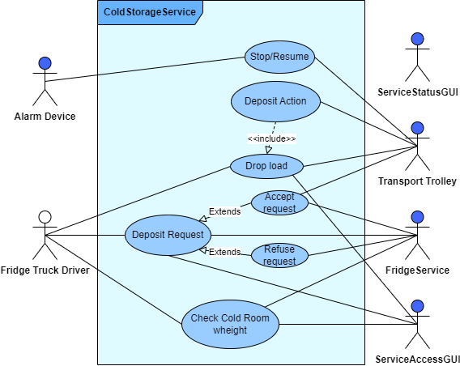
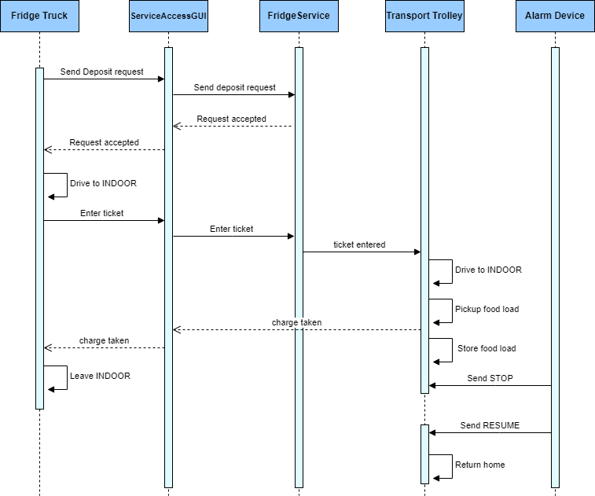

Introduction
Questo documento contiene lo sprint0 del progetto per il tema finale del corso.Requirements
A company intends to build a ColdStorageService, composed of a set of elements:
a service area (rectangular, flat) that includes:
an INDOOR port, to enter food (fruits, vegetables, etc. )
a ColdRoom container, devoted to store food, upto MAXW kg .
The ColdRoom is positioned within the service area, as shown in the following picture:

a DDR robot working as a transport trolley, that is intially situated in its HOME location. The transport trolley has the form of a square of side length RD.
The transport trolley is used to perform a deposit action that consists in the following phases:
pick up a food-load from a Fridge truck located on the INDOOR
go from the INDOOR to the PORT of the ColdRoom
deposit the food-load in the ColdRoom
a ServiceAcessGUI that allows an human being to see the current current weigth of the material stored in the ColdRoom and to send to the ColdStorageService a request to store new FW kg of food. If the request is accepted, the services return a ticket that expires after a prefixed amount of time (TICKETTIME secs) and provides a field to enter the ticket number when a Fridge truck is at the INDOOR of the service.
a ServiceStatusGUI that allows a Service-manager (an human being) to supervises the state of the service.
Alarm requirements
The system includes a a Sonar and a Led connected to a RaspnerryPi.
The Sonar is used as an ‘alarm device’: when it measures a distance less that a prefixed value DLIMT, the transport trolley must be stopped; it will be resumed when Sonar detects again a distance higher than DLIMT.
The Led is used as a warning devices, according to the following scheme:
the Led is off when the transport trolley is at HOME
the Led blinks while the transport trolley is moving
the Led is on when transport trolley is stopped.
Service users story
The story of the ColdStorageService can be summarized as follows:
A Fridge truck driver uses the ServiceAcessGUI to send a request to store its load of FW kg. If the request is accepted, the driver drives its truck to the INDOOR of the service, before the ticket exipration time TICKETTIME.
When the truck is at the INDOOR of the service, the driver uses the ServiceAcessGUI to enter the ticket number and waits until the message charge taken (sent by the ColdStorageService) appears on the ServiceAcessGUI. At this point, the truck should leave the INDOOR.
When the service accepts a ticket, the transport trolley reaches the INDOOR, picks up the food, sends the charge taken message and then goes to the ColdRoom to store the food.
When the deposit action is terminated, the transport trolley accepts another ticket (if any) or returns to HOME.
While the transport trolley is moving, the Alarm requirements should be satisfied. However, the transport trolley should not be stopped if some prefixed amount of time (MINT msecs) is not passed from the previous stop.
A Service-manager migtht use the ServiceStatusGUI to see:
the current state of the transport trolley and it position in the room;
the current weigth of the material stored in the ColdRoom;
the number of store-requests rejected since the start of the service.
Requirement analysis
Per quanto riguarda i requisiti di sistema abbiamo che:- ColdStorageService: E' il servizio che si richiede di sviluppare. Deve permettere a una persona (fridge truck driver) di fare una richiesta di deposito di un food load all'interno di una cold room e gestire in maniera corretta tale richiesta.
- Service area: Una stanza piana e rettangolare, racchiusa da pareti (che ne definiscono il perimetro) entro le quali il transport trolley può muoversi liberamente.
- Indoor port: Una zona della service area all'interno della quale il fridge truck può depositare il food load e il transport trolley può prendere il food load da trasportare.
- Fridge truck driver: L'ente (esterno al sistema) che fa le richieste di deposito dei food loads. Ogni fridge truck driver fa una richiesta di un singolo food load alla volta.
- Food load: E' il carico di cibi che il fridge truck chiede di depositare nella indoor port e che il transport trolley dovrà transportare fino alla cold room. E' caratterizzato da un peso FW in kilogrammi.
- Cold room: E' una stanza definita all'interno della service area, definita come un "ostacolo" con cui il transport trolley può collidere. E' caratterizzata da una PORT di ingresso, definita come una zona della service area posta in prossimità di uno dei lati della cold room e all'interno della quale il transport trolley può depositare il food load. La cold room è caratterizzata di un limite massimo MAXW di kilogrammi di cibo che può contenere.
- Transport trolley: E' l'ente incaricato del deposito dei food loads. E' rappresentato fisicamente da un DDR robot (si veda VirtualRobot23 per una definizione), ed ha la forma di un quadrato di lato RD.
- Home: Una zona della service area all'interno della quale è posizionato il transport trolley all'avvio del sistema, e in cui questo ritorna dopo aver depositato il food load (in caso non ci siano nuovi tickets da accettare).
- Deposit action: Si intende l'insieme completo delle operazioni che il transport trolley svolge dopo che il fridge truck driver inserisce il ticket number (se il robot non è occupato). L'azione termina con il deposito del food load nella cold room. Con deposito si intende il rilascio del carico all'interno dell'area PORT con aggiornamento della quantità di cibo contenuta all'interno della cold room
- ServiceAccessGUI: E' un'interfaccia che definisce l'entry point della richiesta di deposito. Deve permettere a un umano di visualizzare la quantità (in peso) di cibo immagazzinata nella cold room e permettere di effettuare una richiesta di deposito di un food load. L'interfaccia deve anche avere un campo in cui poter immettere il ticket number quando il fridge truck si trova nella INDOOR.
- Ticket: E' il token che il ColdStorageService fornisce al fridge truck driver (attraverso l'interfaccia ServiceAccessGUI) in caso in cui la richiesta di deposito venga accettata. Questo token dovrà essere utilizzato (attraverso l'interfaccia ServiceAccessGUI) quando il driver arriva nella INDOOR area. Il ticket ha un tempo di validità TICKETTIME in secondi, scaduti i quali la richiesta di deposito non viene più accettata.
- ServiceStatusGUI: E' un'interfaccia che permette a un ente (il Service-manager) di supervisionare lo stato del servizio. Deve quindi fornire indicazioni sullo stato corrente (current state) del transport trolley e la sua posizione (position), il peso totale del carico al momento depositato nella ColdRoom (current weight), e il numero delle richieste di deposito rifiutate dall'avvio del servizio.
- Current State: Con lo stato corrente del transport trolley si intende l'operazione in cui è impegnato al momento (attesa di una richiesta, movimento verso una particolare zona, caricamendo del food load, deposito su cold room).
- Sonar: Dispositivo fisico per la misura di distanze ( Sonar). Nel sistema considerato viene utilizzato come alarm device, caratterizzato da una distanza DLIMIT. Se il sistema rileva una distanza inferiore a DLIMIT deve essere inviato al transport trolley un segnale di stop. Se la distanza torna maggiore di quel valore allora deve essere inviato un segnale di resume.
- Led: Dispositivo fisico utilizzato come indicatore dello stato del robot.
- RaspberryPi: RaspberryPi
- Stop e Resume: Il segnale di stop blocca il transport trolley. Con bloccare si intende che dopo essere stato fermato, il robot non procederà nelle sue normali mansioni (che possono essere movimento, deposito, ...) ma si blocca in attesa di un segnale di resume, che permette di riattivarlo in modo che possa proseguire ciò che stava facendo prima dello stop. Il transport trolley non deve ricevere un segnale di stop se non sono passati almeno MINT millisecondi dal precedente segnale di stop inviato.
- Il fridge truck driver è un operatore umano che non fa parte del sistema. Fanno invece parte del sistema i messaggi che questo deve inviare usando uno smart device (telefonino). Può essere opportuno simulare il fridge truck driver e viene consigliato di farlo introducendo una applicazione esterna, sviluppata ad esempio in Python. Nelle fasi preliminari è invece accettabile di simulare il fridge truck driver con un attore.
- Sarebbe bene mandare via il truck appena possibile.
- Il ColdStorageService potrebbe ricevere un nuova richiesta mentre sta ancora eseguendo la deposit action di quella precedente.
- Una volta pieni, i contenitori non verranno svuotati, se non riavviando l’applicazione.
- Come posizione del trolley, sono valide anche indicazioni solo qualitative, quali ‘at indooor’, ‘at glassbox’, etc.
- Non è richiesto che il robot si muova in modo ottimizzato, ma non dovrebbe nemmeno girovagare troppo nella stanza.
- Il tempo di raccolta del materiale dal truck è sempre limitato e prevedibile, mentre il tempo necessario per il deposito potrebbe essere anche alquanto lungo (anche in relazione al punto preceente).
- Il sonar/led NON sono sul trolley, ma su un RaspberryPi a parte.
- Il Sonar rileva oggetti che saremo noi a porgli davanti.
- Il blocco del trolley in conseguenza di un ‘allarme’ individuato dal Sonar dovrebbe avvenire ‘il prima possibile’.
- Il DDR fornito dal committente ha un sonar on-board, ma questo viene usato per rilevare ostacoli quando il robot si muove.
Alcune considerazioni
Rappresentazione del sistema
Al fine di rappresentare in maniera grafica e completa i vari componenti del sistema scaturiti dall'analisi dei requisiti, di seguito viene mostrato uno use case diagram del probema considerato:
{kind=link}

{kind=link}
Piano di lavoro
Di seguito si trova una lista dei requisiti ordinati per priorità (il primo è il più importante):- La realizzazione del core applicativo è sicuramente il requisito più importante. Comprende la realizzazione delle componenti applicative di base, quali il FridgeService (con le varie zone e cold room), il Transport Trolley e il ServiceAccessGUI.
- Il ServiceAccessGUI può essere inizialmente simulato per concentrare tutte le risorse sulla realizzazione del sistema di base senza interfacce con l'esterno, e sviluppato poi in un secondo momento.
- Si ha poi l' Alarm Device, che può essere sviluppato dopo il core applicativo in quanto non è fondamentale per il funzionamento del sistema.
- Anche se non è un vero componente del sistema, bisogna realizzare un programma che simuli il Fridge Truck, in modo da avere un sistema completo da poter testare.
- Infine si ha il ServiceStatusGUI, che è il componente meno importante del sistema e definito come requisito opzionale. Viene quindi lasciato come plus da realizzare solo in caso rimangano a disposizione ancora risorse temporali per lo sviluppo.